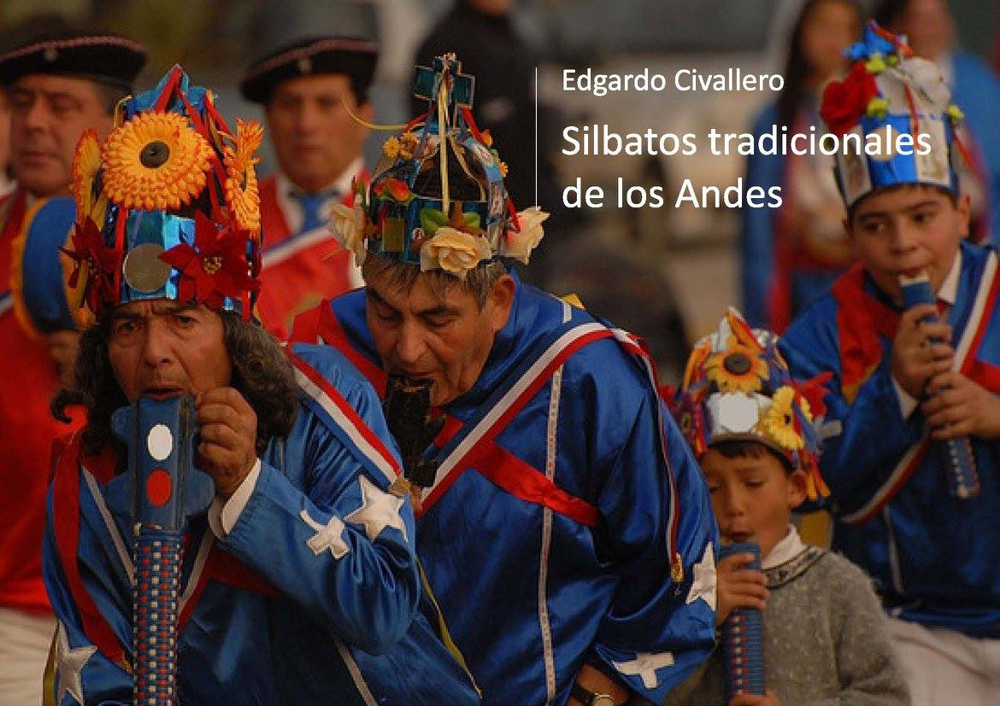

Silbatos tradicionales de los Andes
Inicio > Libros digitales sobre música. Serie 1 > Silbatos tradicionales de los Andes
Cómo citar este trabajo: Civallero, Edgardo (2025). Silbatos tradicionales de los Andes. Edición de archivo. Bogotá: El Zorro de Abajo Editora.
Descargar en PDF.
Este libro constituye un estudio amplio sobre la familia de aerófonos cerrados y sin canal de insuflación del área andina, rastreando su desarrollo desde las flautas prehispánicas hasta las manifestaciones rituales contemporáneas en Chile, Bolivia y Argentina. Basado en fuentes arqueológicas, organológicas y etnográficas, el texto propone una lectura transversal del silbato como una tecnología sonora ancestral que enlaza prácticas rituales, cosmologías agrícolas y procesos de continuidad cultural.
El texto parte de una definición técnica: los silbatos andinos son flautas longitudinales simples, cerradas en su extremo distal y carentes de orificios de digitación. Su sonido, resultado del choque del aire contra el borde superior, es fijo y puro, aunque contiene una riqueza de armónicos que varía según el material y la forma interna del tubo. Se vinculan directamente con las flautas de Pan, de las que serían una reducción funcional. En los Andes meridionales, ambas familias estuvieron estrechamente relacionadas, compartiendo principios estructurales y un mismo universo ritual.
A partir de este punto, la obra se adentra en una reconstrucción arqueológica detallada que inicia con las antaras del mundo surandino. Estas flautas de Pan, formadas por hileras de tubos de piedra, cerámica, madera o caña, constituyen los precursores directos de los silbatos actuales. Se sigue su recorrido desde las culturas Paracas, Nasca y Moche hasta Tiwanaku, y desde allí hacia las tierras altas bolivianas y el noroeste argentino, donde adopta formas locales. En Chile, las antaras San Pedro, Diaguita y Aconcagua alcanzaron un refinamiento técnico notable, con tubos complejos, dobles asas y afinaciones precisas. La adaptación Mapuche de estos modelos, visible en los pivilcahue y pitucahue, marcó el tránsito hacia los silbatos de madera y piedra de épocas históricas.
El texto detalla cómo, a partir del siglo XVII, la tradición lítica de las antaras derivó en instrumentos de madera: el piloilo o pitucahue, compuesto por cinco a siete conductos y ejecutado mediante rápidas oscilaciones verticales del instrumento. Las descripciones coloniales lo retratan como una tablilla sonora que requería una respiración potente y sostenida. En la actualidad, su uso es residual tanto entre los Mapuche chilenos como en las comunidades argentinas vecinas.
Junto a estos modelos, el texto examina las flautas arqueológicas longitudinales encontradas en culturas Diaguita y Aconcagua: piezas de piedra con uno o dos conductos y una gran variedad de longitudes. En algunos casos, el tubo estaba cerrado en el extremo distal; en otros, abierto y sellado mediante tapones de madera. Estas piezas, junto a las flautas acodadas de piedra y las tutucas de hueso humano descritas por los cronistas, confirman la existencia de una tradición sonora centrada en la experimentación material y acústica, no subordinada a la melodía sino a la vibración y al timbre.
La segunda parte del libro aborda las manifestaciones vivas del instrumento en el mundo contemporáneo. Se dedica amplio espacio a las flautas de los bailes chinos de Chile central y del Norte Chico, herederas directas de las antiguas antaras. Estas orquestas comunitarias de flautas y percusiones interpretan un repertorio no melódico, basado en el sonido rajado, una textura vibrante, saturada y llena de armónicos, resultado del uso de tubos complejos de madera o cañaCada flauta, única en timbre, produce una nota fija; el conjunto genera un denso acorde disonante que se alterna entre dos hileras de intérpretes. El sonido, más que musical, es corporal y ritual: los músicos-bailarines soplan mientras ejecutan violentas mudanzas coreográficas que los llevan al límite físico y mental.
En continuidad con esta estética, se examina la pifilka Mapuche, flauta longitudinal de uno o dos conductos fabricada en madera, piedra o cerámica, de entre 20 y 40 cm de largo. Su sonido es único y se interpreta en pares, alternando soplos que acompañan el ritmo de los tambores kultrún y kakekultrún. Antiguamente presente en ceremonias bélicas y funerarias, hoy se conserva casi exclusivamente en el ngillatún, una ceremonia de rogativa tradicional. La pifilka encarna la noción de voz espiritual: un sonido simple pero cargado de resonancias simbólicas que comunica con los ancestros y los espíritus tutelares.
La obra continúa con la descripción de los tuquru del altiplano boliviano, flautas de gran tamaño empleadas en la danza de los uxusiri o guardianes nocturnos de las chacras del Titicaca. Construidas con caña y sin orificios, producen un único tono potente, soplado en el momento en que los danzantes se inclinan hacia adelante. Su sonido acompaña movimientos rituales de limpieza y cosecha, y se organiza en dos grupos sonoros que se alternan, generando acordes pulsantes llenos de batimientos.
El libro culmina con el análisis del jant'arki o jantarque de Potosí, flauta rectangular de madera de algarrobo o churqui, sin orificios de digitación. Produce dos sonidos fijos, uno de ellos al tapar el extremo distal con el dedo, y se asocia a repertorios carnavalescos como los taquipayanacus. Considerado un instrumento antiquísimo por sus intérpretes, el jant'arki aparece en las crónicas de Guamán Poma y en hallazgos arqueológicos de piedra y hueso, lo que confirma su continuidad desde los señoríos Qara Qara y Chicha del antiguo Collasuyu. Se sigue su expansión hacia el oriente boliviano, donde fue adoptado por el pueblo Ava con el nombre de serere o senene, y por los Yuracaré y Nivaklé de las tierras bajas, conservando siempre su estructura minimalista y su función ritual.
El rasgo común de todos estos instrumentos es la monofonía vibrante: sonidos únicos, sin escala, cuya riqueza proviene de la interacción de armónicos y de la corporalidad del soplo. En el universo andino, donde el sonido no representa sino que actúa, el silbato es un agente ritual: llama a la lluvia, espanta a los espíritus malignos, acompaña la muerte o marca el pulso agrícola.
El silbato, reducido a su forma más elemental, aparece como emblema de una estética de la tierra, una poética de la vibración y una ética del sonido como vínculo. Desde las piedras sonoras diaguitas hasta las flautas lloronas de los bailes chinos, los Andes han cultivado una ciencia acústica propia, centrada en el temblor, el desequilibrio y la reverberación como expresiones de vida.